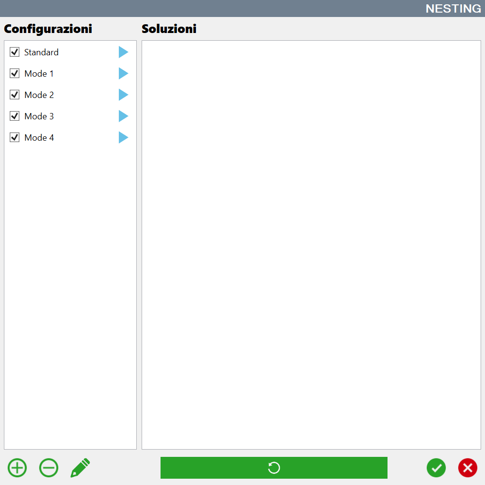
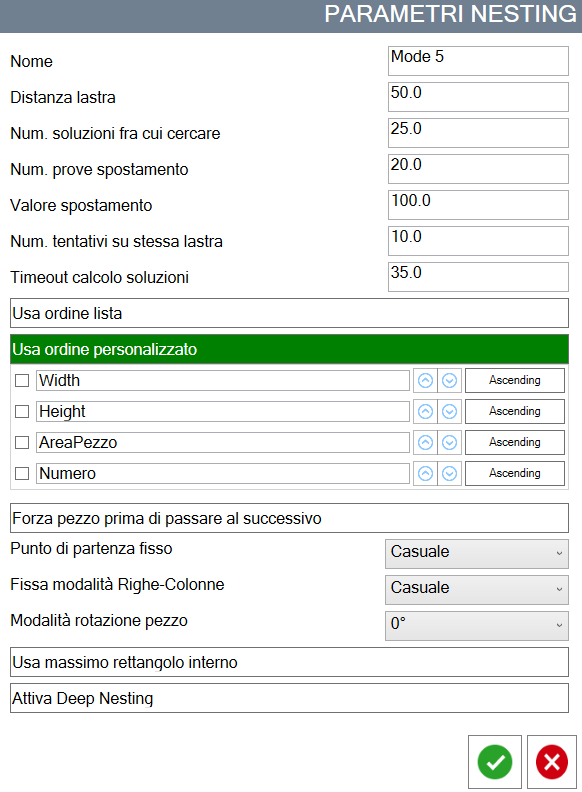
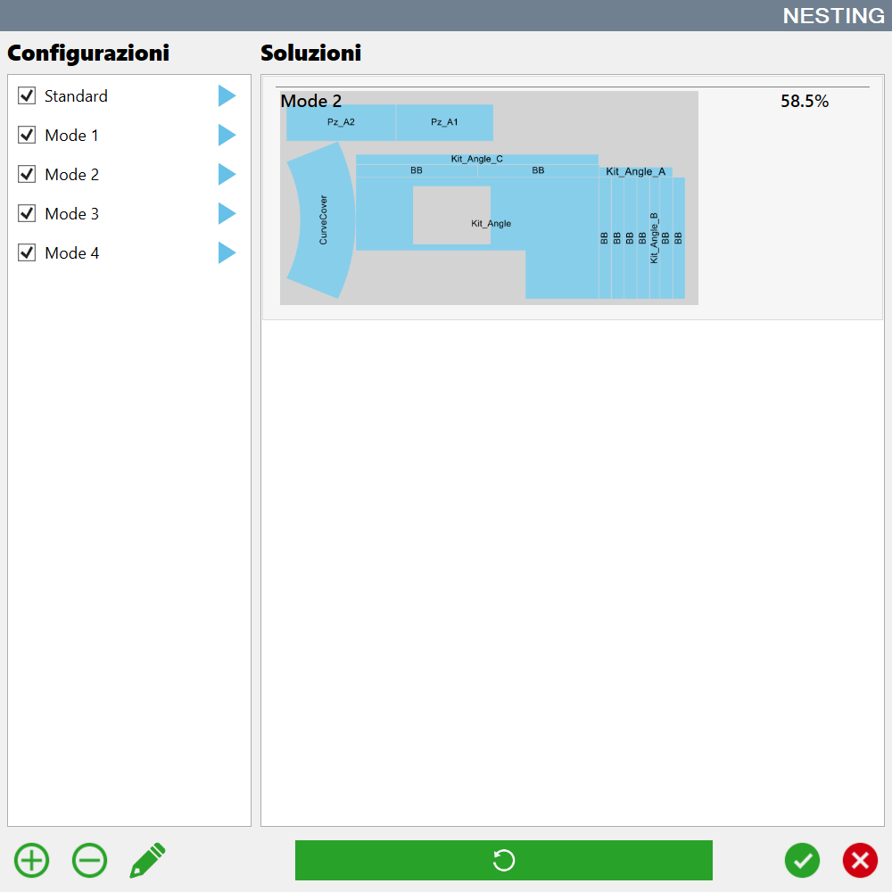
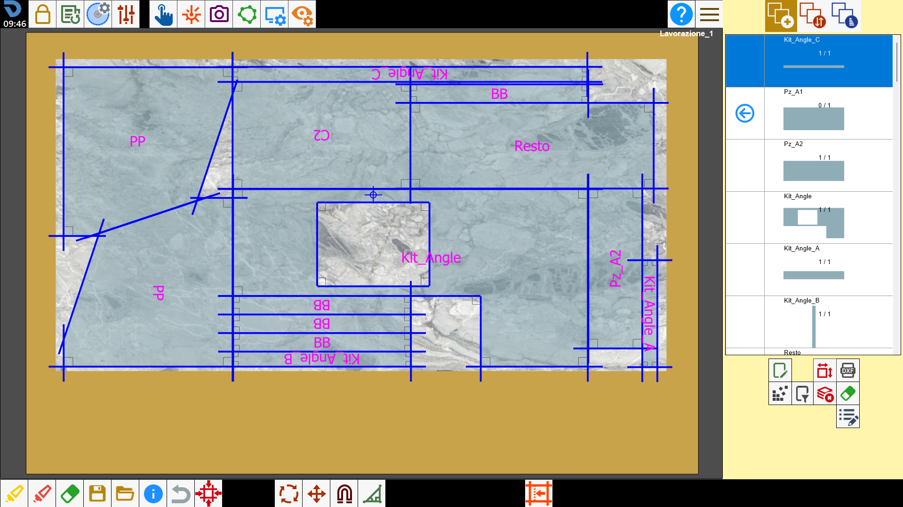

The use of automatic Nesting is particularly useful when the pieces to be processed are many and the different combinations are no longer manageable in a simple way by the man.
Based on the set parameters there can be different solutions. The ones are showed on monitor and the operator can choose the preferred configuration.

Buttons
Add | |
/0.05.png) | Delete |
/0.06.png) | Modify |
/0.07.png) | Execution |
Change configuration
The automatic Nesting allows the customization of the parameters to use for the calculation of the placement of the pieces inside the working area linked to a configuration.
In fact, based on the type of pieces to be processed, there can be better and more performant strategies.

Name | Name of the configuration that appears in the list. |
Slab distance | Distance that pieces must maintain from the slab's edge when they are positioned. |
Num. solutions search | Number of solutions calculated by Nesting. Among all those calculated, the best is chosen. |
Num. displacement tests | Number of tests performed moving the piece if it doesn’t enter the slab's perimeter. |
Movement value | Value of which move piece to attempt to insert it inside perimeter of slab. |
Num. attempts on the same slab | Number of attempts to insert the piece inside the same perimeter in case it does not enter. |
Solutions calculation timeout | Maximum time granted for the calculation of each solution individually. |
Use list order | It forces to try to position the pieces inside the perimeter following the order in which they are in the piece list. |
Use custom order | Allows to choose the order with which try to position the pieces inside the perimeter of the slab based on some of their properties. |
Force piece before moving to the next | Allows to choose if to try to position the piece in different places inside the perimeter of the slab, or to pass to the placement of the next one without further attempts. |
Fixed starting point | Allows to choose the point of the perimeter from which to start inserting the pieces. |
Fix Rows-Columns mode | Allows to choose if during the insertion of the pieces it is necessary to maintain a logic so that they are arranged in rows, in columns or randomly. |
Piece rotation mode | Allows to choose the logic with which is possible to rotate the pieces for testing placement inside of the slab perimeter. |
Use largest inscribed rectangle | If enabled, the pieces will be inserted inside the rectangle of greater area contained inside the perimeter. |
Activate Deep Nesting | If disabled, the pieces are inserted on the slab to optimize the use of the material handling system with suction cups for the resolution of collisions. |
Execution Nesting
Pressing the blue arrow present next to each item of the list, will be calculated the Nesting using that configuration.
A preview of the result will be inserted into the right section. Is shown the arrangement of the pieces inside the perimeter and the percentage of area of the slab that is covered by the pieces.

If the arrangement of the pieces does not satisfy, it is possible to press again the blue arrow to recalculate the result.
After having executed all the Nesting configurations, the results are arranged in order to show first those that allow to occupy the biggest surface of the slab.
/0.09.png)
Once chosen the preferred configuration, press the confirmation button and the pieces will be positioned on the slab according to the chosen arrangement. The position of the pieces on the work area remains editable by the operator.
